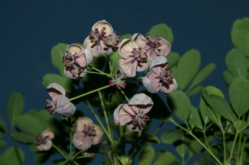

Lardizabalaceae
(No single widely accepted common name)
Lardizabalaceae is a family of dicotyledonous flowering plants in the order Ranunculales, primarily comprising woody vines (lianas) along with a few shrubs. Native to eastern Asia and Chile, the family is known for its often compound leaves, 6-parted flowers, separate carpels, and fleshy, edible fruits in some species like Akebia.
Overview
The Lardizabalaceae family includes about 8-9 genera and approximately 30-40 species. Most members are woody, twining vines (lianas), though a few are shrubs (e.g., Decaisnea). The family exhibits a disjunct distribution pattern, with most genera native to eastern Asia (China, Korea, Japan) and two genera (Lardizabala, Boquila) endemic to southern South America (Chile).
These plants typically have alternate, palmately or pinnately compound leaves. The flowers are often unisexual (with plants monoecious or dioecious), radially symmetrical, and usually 3-merous (parts in threes), commonly having 6 petal-like sepals and sometimes 6 smaller, nectar-producing petals. A key feature is the gynoecium, which consists of 3 or more separate carpels (apocarpous). The fruits are fleshy, often forming aggregates of berries or large, sausage-shaped follicles containing seeds embedded in pulp.
Several species are cultivated as ornamentals, notably Akebia quinata (chocolate vine) for its attractive foliage, fragrant flowers, and peculiar fruits. The fruits of Akebia, Stauntonia, and Decaisnea are edible. Phylogenetically, Lardizabalaceae belongs to the order Ranunculales, a basal lineage of eudicots that also includes families like Ranunculaceae (buttercups), Berberidaceae (barberries), and Papaveraceae (poppies).
Quick Facts
- Scientific Name: Lardizabalaceae R.Br.
- Common Name: (None widely accepted; Akebia family sometimes used)
- Number of Genera: Approximately 8-9
- Number of Species: Approximately 30-40
- Distribution: Eastern Asia and Chile
- Evolutionary Group: Eudicots - Ranunculales
Key Characteristics
Growth Form and Habit
Mostly woody vines (lianas) climbing by twining stems; rarely shrubs (e.g., Decaisnea). Usually evergreen or semi-evergreen.
Leaves
Leaves are alternate, compound (palmately or pinnately, sometimes 2- or 3-ternately compound), petiolate. Leaflets are typically entire or sometimes lobed. Stipules are usually absent or minute.
Inflorescence
Flowers are borne in axillary or terminal racemes or panicles, often drooping.
Flowers
Flowers are typically unisexual (plants monoecious or dioecious), sometimes bisexual, actinomorphic (radially symmetrical), and usually 3-merous. Key features include:
- Perianth: Typically consists of 6 sepal-like or petal-like segments (sepals) arranged in two whorls of 3. These are often fleshy or leathery, greenish, whitish, or purplish.
- Petals: Often 6, typically much smaller than the sepals, sometimes modified into nectar glands (nectaries), or occasionally absent.
- Androecium: Usually 6 stamens, arranged opposite the petals/inner sepals. Filaments are sometimes fused at the base into a tube. Anthers open by longitudinal slits. Staminodes may be present in female flowers.
- Gynoecium: Ovary is superior, composed of 3 to many (e.g., 3-15) distinct (apocarpous) carpels. Each carpel contains several to many ovules, usually arranged on parietal placentas within the carpel. Pistillodes may be present in male flowers.
Fruits and Seeds
The fruit is an aggregate of fleshy, indehiscent or dehiscent berries or follicles, derived from the separate carpels. Fruits are often large, elongated or sausage-shaped, containing numerous seeds embedded in pulp. Seeds often have endosperm.
Chemical Characteristics
The family is known to produce various triterpenoid saponins and sometimes alkaloids (e.g., benzylisoquinoline alkaloids, common in Ranunculales).
Field Identification
Identifying Lardizabalaceae involves recognizing their vining habit, compound leaves, distinctive flowers, and fleshy fruits:
Primary Identification Features
- Habit: Mostly woody vines (lianas), rarely shrubs.
- Leaves: Alternate, compound (palmate or pinnate).
- Flowers: Usually unisexual, 3-merous (often 6 petaloid sepals), sometimes with 6 smaller petals/nectaries.
- Gynoecium: Carpels are distinct (apocarpous), usually 3 or more, superior.
- Fruit: Aggregate of fleshy berries or follicles (often sausage-shaped).
- Distribution: Native to East Asia or Chile.
Secondary Identification Features
- Flower Color: Often purplish, brownish, greenish, or whitish.
- Stamens: Usually 6, sometimes fused at base.
- Inflorescence: Racemes or panicles, often drooping.
Seasonal Identification Tips
- Spring/Summer: Flowering season. Look for the characteristic 6-parted flowers in racemes.
- Late Summer/Fall: Fruiting season. The distinctive fleshy, often sausage-shaped or berry-like aggregate fruits are key identifiers.
- Vegetative State: The combination of woody vine habit and alternate compound leaves is suggestive, especially in their native regions.
Common Confusion Points
Lardizabalaceae vines might be confused with members of other vine families:
- Fabaceae (Pea family - some vines): Many climbing legumes have compound leaves, but possess characteristic papilionaceous (pea-like) zygomorphic flowers and fruit is a legume (pod).
- Menispermaceae (Moonseed family): Also in Ranunculales. Often woody vines with alternate simple (sometimes lobed) leaves, small unisexual flowers (often 3-merous), distinct carpels, and drupaceous fruits. Differ in having simple leaves.
- Vitaceae (Grape family): Woody vines, but typically climb via tendrils opposite the leaves, have simple palmately lobed/veined leaves (or palmately compound), small 5-merous flowers with superior ovary, and fruit is a berry (grape).
- Ranunculaceae (Buttercup family - e.g., Clematis): Some are vines. Clematis has opposite compound leaves, flowers with 4 petaloid sepals (petals absent), numerous stamens, numerous distinct carpels developing into achenes with persistent feathery styles.
- Berberidaceae (Barberry family - e.g., Berberis): Mostly shrubs, but related within Ranunculales. Differ in having simple leaves (often spiny), different flower structure (often with irritable stamens), and berry fruits from a single carpel.
Field Guide Quick Reference
Look For:
- Woody vines (mostly)
- Leaves alternate, compound (palmate/pinnate)
- Flowers often unisexual, 6 petaloid sepals
- Carpels distinct (apocarpous), superior
- Fruit an aggregate of fleshy berries/follicles
Key Variations:
- Leaflet number/arrangement
- Presence/absence of small petals
- Flower color (purplish, greenish, whitish)
- Fruit shape (sausage-like vs. ovoid)
Notable Examples
The family includes several genera known in horticulture or for edible fruits.

Akebia quinata
Chocolate Vine / Five-leaf Akebia
A popular ornamental vine native to East Asia, known for its palmately compound leaves with 5 leaflets, fragrant purplish-brown flowers (male and female separate), and large, sausage-shaped, purplish fruits that split open to reveal edible pulp and black seeds. Can be invasive in some regions.

Lardizabala biternata
Zabala Fruit / Coguil
The type genus for the family, endemic to central and southern Chile. A woody vine with biternately compound leaves (leaflets divided into threes twice). Produces dark purple flowers and edible, dark, sausage-shaped fruits.

Stauntonia hexaphylla
(Staunton Vine)
An evergreen vine native to Japan, Korea, and China. Has palmately compound leaves typically with 6 leaflets. Bears fragrant, whitish, bell-shaped flowers and ovoid, edible fruits.

Decaisnea fargesii
Dead Man's Fingers / Blue Sausage Fruit
Native to China and the Himalayas. Unusual in the family for being an upright shrub rather than a vine. Has large, pinnately compound leaves and produces striking, metallic-blue, sausage-shaped fleshy follicles containing black seeds in a gelatinous pulp. (Sometimes placed in its own family, Decaisneaceae).
Phylogeny and Classification
Lardizabalaceae is placed in the order Ranunculales, which represents one of the earliest diverging lineages within the Eudicots. This order is distinct from the major core eudicot clades like Rosids and Asterids.
Within Ranunculales, Lardizabalaceae is part of a core group that also includes Sargentodoxaceae (sometimes merged into Lardizabalaceae), Menispermaceae (moonseed family), Berberidaceae (barberry family), Ranunculaceae (buttercup family), and Papaveraceae (poppy family, including former Fumariaceae). Molecular studies generally place Lardizabalaceae as sister to Sargentodoxaceae (if recognized) or as part of a clade with Menispermaceae and Berberidaceae, separate from the Ranunculaceae/Papaveraceae clade.
Position in Plant Phylogeny
- Kingdom: Plantae
- Clade: Angiosperms (Flowering plants)
- Clade: Eudicots
- Order: Ranunculales
- Family: Lardizabalaceae
Evolutionary Significance
Lardizabalaceae is significant for understanding early eudicot evolution:
- Basal Eudicot Lineage: As part of Ranunculales, it represents an early branch of the eudicot tree, retaining some potentially ancestral features (like apocarpy - separate carpels).
- Woody Vine Habit: Represents one of the primary lineages of woody vines within the basal eudicots.
- Biogeography: Its striking disjunct distribution between East Asia and Chile is a classic biogeographic pattern, suggesting ancient connections (e.g., across Beringia or Antarctica) or long-distance dispersal, reflecting broader patterns seen in other Ranunculales families.
- Floral Morphology: The variation in floral structure (unisexual/bisexual flowers, presence/absence of petals/nectaries) within the family provides material for studying floral evolution.